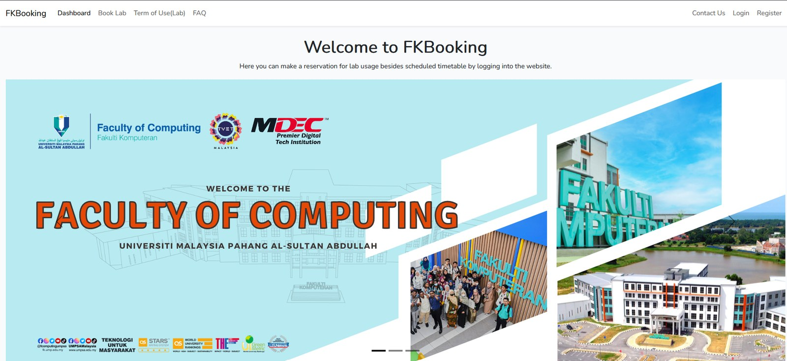
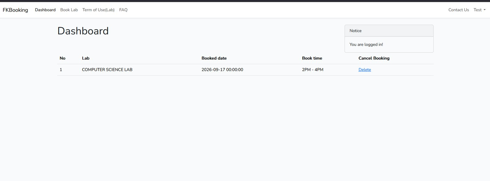

01 / Registration & Login
New users can register with their details, while existing users log in to access the dashboard and booking functions.
A web-based laboratory reservation system designed for students at the Faculty of Computing (FKOM), Universiti Malaysia Pahang (UMPSA). The system provides remote lab booking, visibility into lab availability, and a dashboard for managing reservations.
// The problem and purpose
FKBooking was developed to make laboratory reservations more convenient for FKOM students. The project report identifies three main objectives: enabling students to reserve labs remotely, improving the allocation and use of laboratory spaces, and making lab availability visible before a reservation is made.
// Main modules described in the project report
New users can register with their details, while existing users log in to access the dashboard and booking functions.
Students can submit a laboratory booking request through the reservation interface.
Users can check laboratory availability before making a reservation, helping them plan their booking.
The dashboard allows users to view their lab schedules and cancel existing bookings.
// Tools and development work
The report describes setting up the Laravel environment, running the application locally with XAMPP and Apache, building the dashboard, and creating the interface with Bootstrap and standard web technologies.
The report documents four database tables: Bookings, Labs, Reports, and Users. Laravel migrations were used to create the tables, with models and controllers supporting the application's data operations.
// Screenshots from the project

